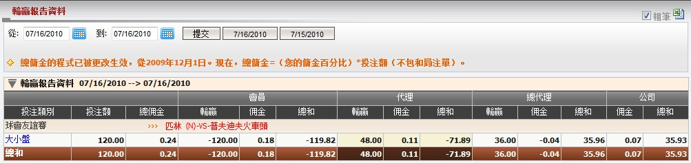
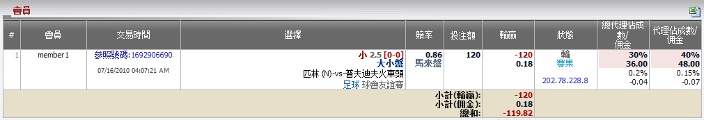

輸贏報告資料
定義:
這份報告顯示會員, 代理, 總代理對於每場賽事的輸贏總計。您可選擇所需的日期, 然後點擊提交鍵。

圖 1.1
用詞註解:
- 投注種類: 被選擇投注的投注類別。
- 投注額: 所有會員總投注數額。
- 總佣金: 總代理從上線處可能得到的最高佣金數額。
- 會員輸贏: 會員輸贏的數額。
- 會員佣金: 會員從代理處得到的佣金數額。
- 會員總和: 會員包括佣金的總輸贏數額。
- 代理輸贏: 代理基於佔成數的輸贏數額。
- 代理佣金: 扣除會員佣金後, 總代理支付予代理的佣金數額。
- 代理總和: 總代理收到或支付予代理的數額。
- 總代理輸贏: 總代理基於佔成數的輸贏數額。
- 總代理佣金: 扣除代理佣金後, 總代理從上線處收到的佣金數額。
- 總代理總和: 總代理包括佣金的總輸贏數額。
- 公司佣金: 總代理從上線出收到的佣金。
- 公司總和: 總代理需支付予或從上線處接收到的總數額。
如何理解報告:
在這份報告, 會員投注 120，賠率 = 0.86, 會員佣金 = 0.15％, 代理佣金 = 0.15％, 代理佔成數 40％, 總代理佣金 = 0.2％, 總代理佔成 = 30％。 讓我們以賽事 "匹林 (中) -vs- 普夫迪夫火車頭" 作為例子, 以了解如何計算此報告。在這張注單, 會員輸:

圖 1.2
注:
- 若 賠率 < 0
- 如果會員贏那麼賠率 = 1。
- 如果會員輸那麼賠率 = |當前賠率|。
- 若 賠率 > 0
- 如果會員贏那麼賠率 = 當前賠率。
- 如果會員輸那麼賠率 = 1。
- 如果投注類別為波膽, 1x2, 總進球, 半場/全場, 優勝冠軍, 混合過關, 最先得分/最後得分那麼賠率 = 當前賠率 - 1。
- 這只是一個簡單的例子告訴您如何計算一個投注的輸贏輸額。在現實中, 一場賽事可能包含很多投注所以我們必須計算個別投注的輸贏及佣金, 總結後才能得到全部輸贏的總額。
- 投注額 = 投注額 = 120.
- 總佣金 = 投注額 * 總代理佣金 = 120 * 0.2% = 0.24.
- 會員輸贏 = -投注額 * 賠率 = -120 * 1 = -120.
- 會員佣金 = 投注額 * 會員佣金 = 120 * 0.15% = 0.18.
- 會員總和 = 會員輸贏 + 會員佣金 = -120 + 0.18 = -119.82.
- 代理輸贏 = 投注額 * 代理佔成 = 120 * 40% = 48.
- 代理佣金 = 投注額 * 代理佣金 * (1 - 代理占成) = 120 * 0.15% * (1 - 40%) = 0.11.
- 代理總和 = 會員輸贏 + 代理輸贏 + 代理佣金 = -120 + 48 + 0.11 = -71.89.
- 總代理輸贏 = 投注額 * 總代理佔成 = 120 * 30% = 36.
- 總代理佣金 = 投注額 * 總代理佣金 * [1 - (總代理佔成 + 代理佔成)] - 代理佣金 = 120 * 0.2% * [1 - (30% + 40%)] - 0.11 = -0.04.
- 總代理總和 = 總代理輸贏 + 總代理佣金 = 36 - 0.04 = 35.96.
- 公司佣金 = 投注額 * 總代理佣金 * [1 - (總代理佔成 + 代理佔成)] = 120 * 0.2% * [1 - (30% + 40%)] = 0.07.
- 公司總和 = -(會員輸贏 + 代理輸贏 + 總代理輸贏 + 公司佣金) = -(-120 + 48 + 36 + 0.07) = 35.93.